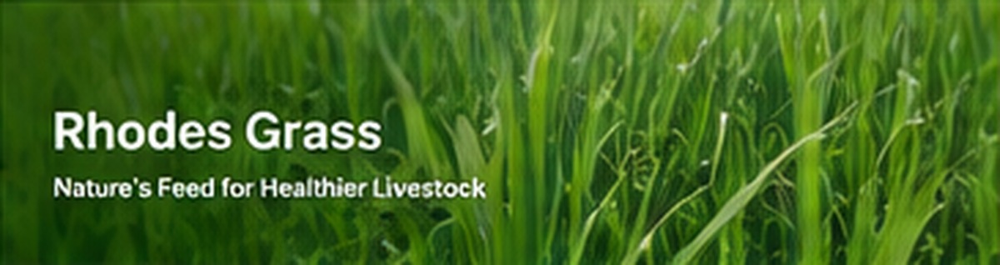

Nature's feed for healthier livestock.
Rhodes Grass (Chloris gayana) is a high-yielding perennial grass known for its excellent nutritional value, drought tolerance and adaptability.

| Scientific Name | Chloris gayana |
| Form | Rhodes Grass hay / dried hay |
| Moisture | Target specification agreed per shipment |
| Crude Protein | Typically around 8–14%, depending on harvest and conditions |
| Fiber (NDF) | Typically around 55–65% |
| Bale Weight | Flexible — small, large or compressed bales |
| Bale Dimensions | According to selected packaging format |
| Harvest Season | Available according to farm and seasonal supply |
Final specifications should be confirmed on the commercial offer and laboratory analysis for each shipment.